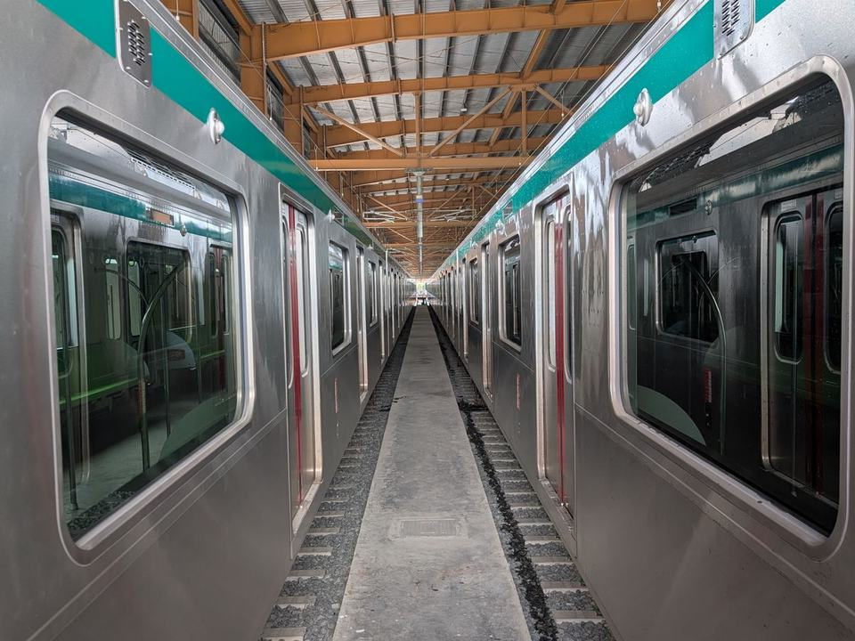

Dec 2024 – Present
Junior Engineer · Dhaka MRT Line 6
NKDM Association (NK–NK India–DMRC–MOTT UK–MOTT India–DDC) · Development Design Consultants Ltd. (DDC) · Rolling stock and depot equipment
- Inspected, tested and commissioned electromechanical depot equipment under MRT Line 6 (Contract Package 8), checking compliance with drawings and safety standards.
- Helped resolve interface issues such as undershoot, false floating and pantograph faults, and supported the corrective actions that followed.
- Audited contractor reports and maintenance documentation, and kept procurement data in Aconex for traceability.
